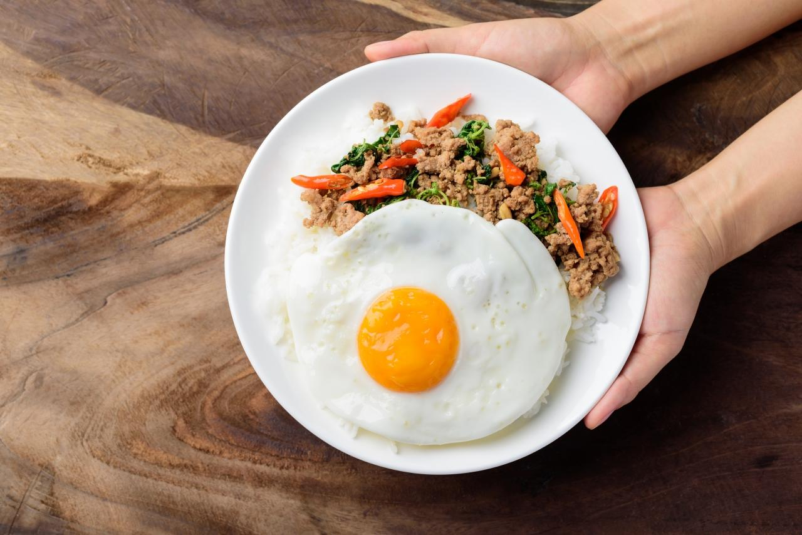

Pad Kaprao Moosab - Minced Pork Stir Fried Basil with Rice
- Servings:
- Prepping Time
- Cooking Time
Ingredients
- 100 g pork
- 1 cup holy basil leaves
- 3 garlic cloves, peeled
- 3 red chilies
- 1 tbsp. oyster sauce
- 1 tbsp. fish sauce
- ½ tbsp. sugar
- 1 tbsp. water
- 2 tbsp. oil for frying
-
Optional: Prik Nam Pla (condiment for seasoning the egg,
optional): Mix together some fish sauce, a squeeze of lime juice,
chopped Thai chilies, and chopped garlic.
Instructions
-
Mix water, sugar, fish sauce, and oyster sauce together and set
aside.
-
If you have a mortar and pestle, pound garlic and chilies
together. Otherwise you can chop them or slice thinly.
-
Heat a non-stick saucepan over high heat and add the oil. When the
oil is hot, add chilies and garlic and stir-fry till fragrant,
about 10 seconds.
-
Add pork and stir continuously for few minutes. When it is
starting to look like cooked, add sauce mix and stir-fry till the
sauce coats the meat evenly. If it is too dry, you can add a small
splash of water.
-
Add basil leaves and stir-fry for few more seconds until wilted,
then turn off the heat immediately.